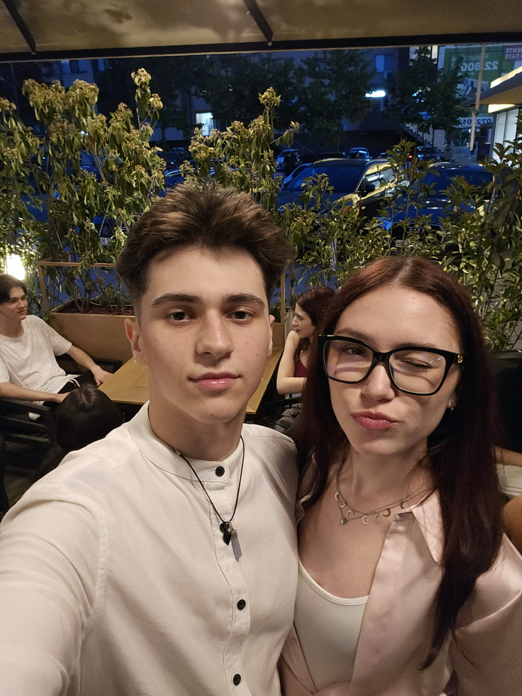
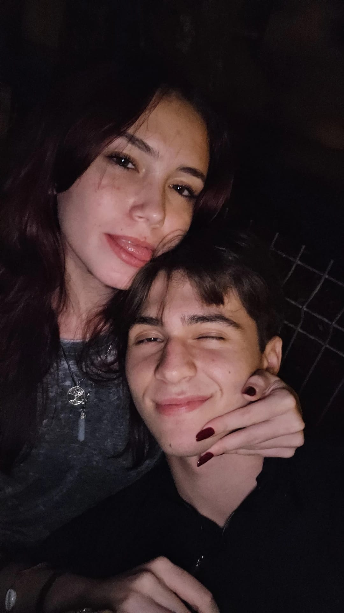
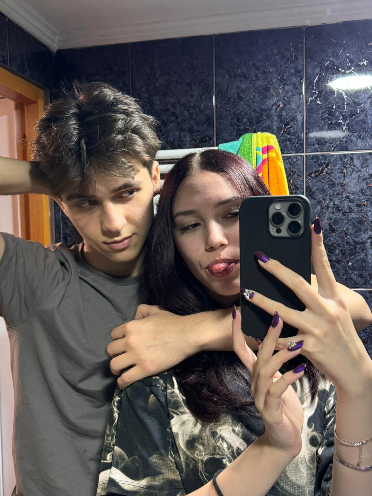

Noi Doi | |
Cine ar fi crezut că două inimi pot fi atât de sincronizate? De la inside jokes, la cele mai frumoase aventuri, totul devine mai special atunci când suntem împreună. Aceasta e doar o mică parte din călătoria noastră, una care sperăm să nu se termine niciodată! | |
Tu si eu... | |
|  |  |  |
Suntem ca niste walkie-talkie-uri pe aceeași frecvență. Ne completăm gândurile, râdem la aceleași glume (chiar și cele care nu sunt atât de bune) și știm exact când e momentul să fim serioși sau să ne prostim. Poate că nu suntem perfecți, dar împreună lucrurile par mereu mai simple, mai clare și, cel mai important, mai frumoase. | ||
Suntem... | ||